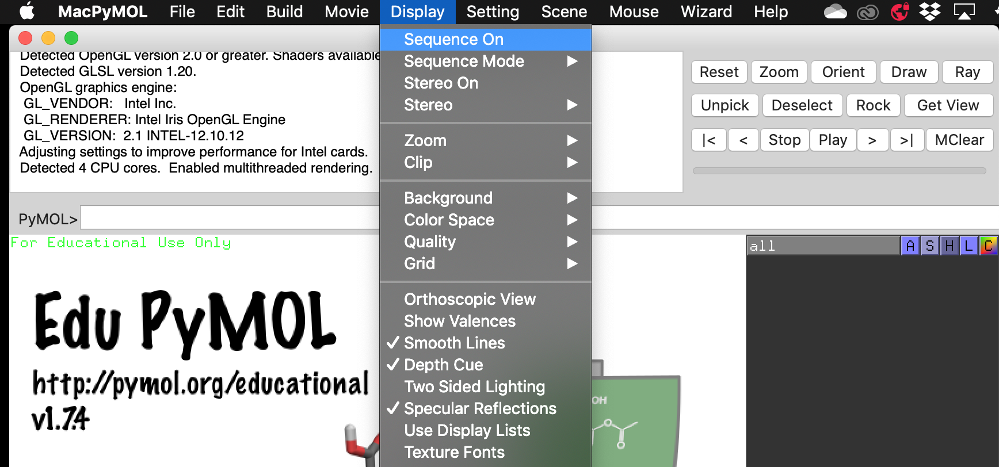
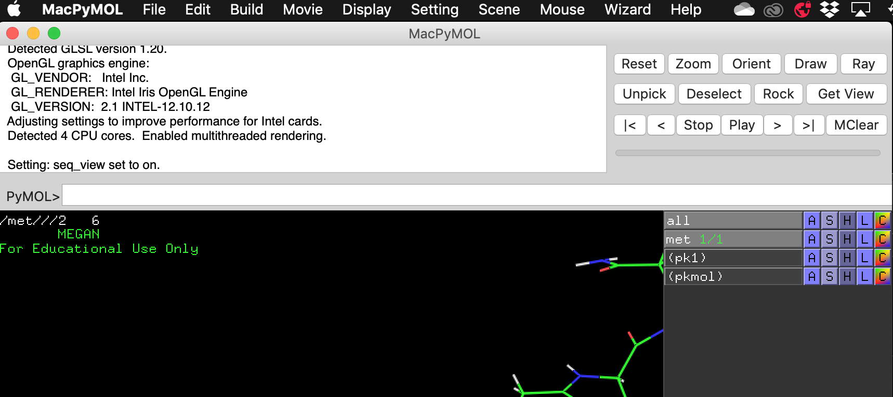
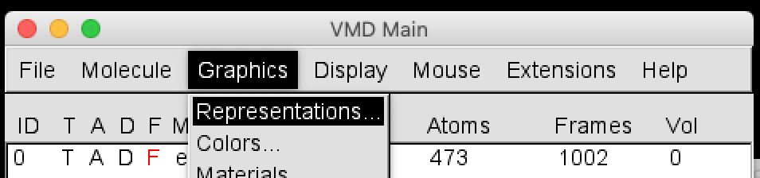
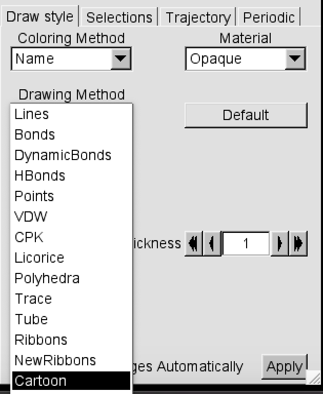
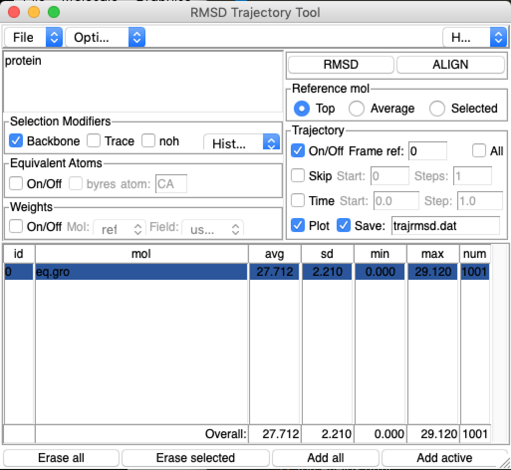
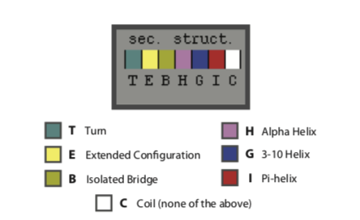

Lab 7: Molecular dynamics and analysis¶
Aim¶
The aim of this lab is to investigate protein folding in vacuum, implicit solvent, and implicit solvent. You will then run a steered molecular dynamics simulation pulling your vacuum protein apart to look at the forces involved.
Important
Submission: To submit this lab, please answer the questions in a text document and submit a PDF.
Setup¶
First download the Lab 7 folder on Wattle.
Then open Terminal. You can find this by opening Spotlight (command + space) and typing “terminal”.
Type the command below to go to the folder you have just downloaded.
cd ~/Downloads/Lab\ 7*
Then type the command below to install the Python library you need. You may have to wait a while.
bash setup.sh
When it is finished, close that Terminal window and open a new one.
Background¶
Proteins¶
Proteins play a number of important roles in the body, in areas such as cellular support, molecule transport, and catalysis of crucial metabolic reactions. A protein is a chain of amino acids bonded together by peptide bonds (its primary structure), which then form secondary structure motifs such as alpha helices and beta sheets, and fold into the tertiary 3D structure that determines its behaviour and function.
Protein folding is this process of folding from an amino acid chain with a random coil structure, to its native 3D conformation with biological function. The thermodynamic hypothesis states that the native structure is determined only by the protein’s primary amino acid sequence. In general, the driving force of protein folding is the hydrophobic effect: where the number of hydrophobic side-chains exposed to water is minimized, and they are instead buried within the protein. The formation of intramolecular hydrogen bonds also stabilizes the 3D structure.
The study of protein folding remains an active problem in computational chemistry. Questions center around three aspects: predicting protein stability, predicting the kinetics of folding, and predicting the native conformation of the protein. However, molecular dynamics simulations of proteins folding in explicit water are still prohibitively costly. Proteins typically fold on timescales of milliseconds, with even the smallest peptides requiring microseconds to fold. Using an implicit solvent model can reduce the cost of simulating a protein in water.
Amino acids¶
There are 20 amino acids found in eukaryotic systems such as the human body. These each have three-letter and one-letter amino acid codes. Using these one-letter codes, we can build a peptide sequence that spells a particular word or phrase.
Amino acid |
Three letter code |
One letter code |
|---|---|---|
alanine |
ala |
A |
arginine |
arg |
R |
asparagine |
asn |
N |
aspartic acid |
asp |
D |
asparagine or aspartic acid |
asx |
B |
cysteine |
cys |
C |
glutamic acid |
glu |
E |
glutamine |
gln |
Q |
glutamine or glutamic acid |
glx |
Z |
glycine |
gly |
G |
histidine |
his |
H |
isoleucine |
ile |
I |
leucine |
leu |
L |
lysine |
lys |
K |
methionine |
met |
M |
phenylalanine |
phe |
F |
proline |
pro |
P |
serine |
ser |
S |
threonine |
thr |
T |
tryptophan |
trp |
W |
tyrosine |
tyr |
Y |
valine |
val |
V |
Terminal¶
Throughout this lab, we will be primarily using the Terminal for our commands. Here are a list of common commands you may need:
man cd: this will bring up the manual entry forcd. Useman cmdto look up the help text for any command.cd path/to/my/directory: this will change directory – your terminal window will change to the directory that you specified.ls: this stands for list. This will list the files in your current directory.pwd: this tells you the path of your working directory, i.e. where your Terminal window currently is.
GROMACS¶
The GROningen MAchine for Chemical Simulation (GROMACS) is the molecular dynamics engine that we will be using through this lab. It has no graphical interface – we interact with it through Terminal. GROMACS has its own file types:
File extension
Description
.pdb
coordinate file
.gro
coordinate file
.top
topology file
.itp
topology file (in this lab, used mostly for position restraints)
.mdp
Molecular Dynamics simulation Parameter file
.xtc
trajectory file
.edr
file with simulation properties
.ndx
index file of atomic groups
.tpr
run topology file (binary)
Method¶
Creating a peptide¶
We will first construct a peptide sequence of your choice. Aim for it to be around 25-35 amino acids long. For example, we used the peptide sequence below:
MEGANQMARATHINKSCHEMISTRYISNEAT
The letters J, B, O, U, X, and Z are not covered by the eukaryotic amino acid alphabet. You may like to substitute O -> Q, U -> V, and J -> I. The letter B is often used to mean “either asparagine (N) or aspartic acid (D)” and Z is often used to mean “either glutamine (Q) or glutamic acid (E)”. You could also choose a different phrase.
Open Pymol by typing pymol in a Terminal window.
Turn on Display > Sequence On.
Then build your peptide by using the keyboard shortcuts Alt + (letter of your choice). Check your sequence to make sure you have correctly added the new amino acid. Sometimes this is not successful and you will have to use the Build > Residue menu to choose the residue manually.
Then choose File > Export Molecule As. The default is to save with a cif extension – select PDB and save it as peptide.pdb in your Lab 7 directory.
Generating a topology¶
In Terminal, navigate to your Lab 7 directory. For many of you, this command will look like:
cd ~/Downloads/Lab\ 7*
Convert your PDB to a GROMACS format and generate topology files with the command below:
gmx pdb2gmx -f peptide.pdb -o peptide.gro -ignh -ter
You will see this come up. Choose the CHARMM 27 force field by typing 8 and hitting enter.
Select the Force Field:
From '/usr/local/gromacs/share/gromacs/top':
1: AMBER03 protein, nucleic AMBER94 (Duan et al., J. Comp. Chem. 24, 1999-2012, 2003)
2: AMBER94 force field (Cornell et al., JACS 117, 5179-5197, 1995)
3: AMBER96 protein, nucleic AMBER94 (Kollman et al., Acc. Chem. Res. 29, 461-469, 1996)
4: AMBER99 protein, nucleic AMBER94 (Wang et al., J. Comp. Chem. 21, 1049-1074, 2000)
5: AMBER99SB protein, nucleic AMBER94 (Hornak et al., Proteins 65, 712-725, 2006)
6: AMBER99SB-ILDN protein, nucleic AMBER94 (Lindorff-Larsen et al., Proteins 78, 1950-58, 2010)
7: AMBERGS force field (Garcia & Sanbonmatsu, PNAS 99, 2782-2787, 2002)
8: CHARMM27 all-atom force field (CHARM22 plus CMAP for proteins)
9: GROMOS96 43a1 force field
10: GROMOS96 43a2 force field (improved alkane dihedrals)
11: GROMOS96 45a3 force field (Schuler JCC 2001 22 1205)
12: GROMOS96 53a5 force field (JCC 2004 vol 25 pag 1656)
13: GROMOS96 53a6 force field (JCC 2004 vol 25 pag 1656)
14: GROMOS96 54a7 force field (Eur. Biophys. J. (2011), 40,, 843-856, DOI: 10.1007/s00249-011-0700-9)
15: OPLS-AA/L all-atom force field (2001 aminoacid dihedrals)
For the following selections, choose the TIP3P water model and the charged termini (first options).
Type ls to list the files in your directory and confirm that you have the following files:
peptide.gro
topol.top
posre.itp
Placing your molecule in a box¶
We now need to define a simulation box for our molecule with the command:
gmx editconf -f peptide.gro -o box.gro -c -d 1
This creates a box at with at least 1 nm between the molecule and the side of the box.
Open your file with VMD:
vmd box.gro
In Extensions > Tk Console, type pbc box. You should be able to see the box that you defined.
Copy these files into your vac/, impsol/, and expsol directories:
topol.top
posre.itp
box.gro
Vacuum¶
After this we will be working in the vac directory. Change directory by typing:
cd vac/
Minimising your structure¶
We need to make sure that our system has no steric clashes or strained geometry. We can relax the structure through energy minimisation. To do this, we use an MDP file containing input parameters to generate a “run topology” TPR file, which GROMACS reads for the actual computation.
To generate the run topology file em.tpr:
gmx grompp -f minim.mdp -c box.gro -p topol.top -o em.tpr
And to run the actual computation:
gmx mdrun -v -deffnm em
When the process is done, list your files with ls and confirm that you have generated (among others) the files em.gro and em.edr.
Explore your energies by looking at the em.edr file.
gmx energy -f em.edr -o em_potential_energy.xvg
The following menu (or something similar) will come up:
Select the terms you want from the following list by
selecting either (part of) the name or the number or a combination.
End your selection with an empty line or a zero.
-------------------------------------------------------------------
1 Bond 2 U-B 3 Proper-Dih. 4 Improper-Dih.
5 CMAP-Dih. 6 LJ-14 7 Coulomb-14 8 LJ-(SR)
9 Coulomb-(SR) 10 Coul.-recip. 11 Potential 12 Pressure
13 Vir-XX 14 Vir-XY 15 Vir-XZ 16 Vir-YX
17 Vir-YY 18 Vir-YZ 19 Vir-ZX 20 Vir-ZY
21 Vir-ZZ 22 Pres-XX 23 Pres-XY 24 Pres-XZ
25 Pres-YX 26 Pres-YY 27 Pres-YZ 28 Pres-ZX
29 Pres-ZY 30 Pres-ZZ 31 #Surf*SurfTen 32 T-rest
Select the Potential energy by typing 11. (This may have a different number for you.) Then type 0 to exit.
Look at your file in Xmgrace:
xmgrace em_potential_energy.xvg
Confirm that the potential energy decreases to a minimum.
The x-axis is incorrect. It should not be ‘Time (ps)’, but ‘Steps’. To change your x-axis, go to Plot > Axes properties and change the Axis Label string.
Note
Save the plot as a PDF and submit it (labelled) with your report. (1 mark)
Equilibrating your structure¶
We now need to equilibrate our structure before collecting data. We often want to simulate our model in an isothermal (NVT) or isobaric-isothermal (NPT) ensemble. In this lab we are simulating in the NVT ensemble at 300 K. As you may remember from the last lab, we always start a simulation by generating velocities, and it often takes time for a system to converge to a set temperature. This simulation period is called the “equilibration”. It is followed by a “production” simulation that is already warmed up to 300K and does not generate new velocities. These two phases are distinct because we usually only use data from the production simulation.
As with the minimisation, create a run topology TPR eq.tpr file and then actually run the simulation with mdrun.
gmx grompp -f nvt_vac.mdp -c em.gro -p topol.top -r em.gro -o eq.tpr
gmx mdrun -v -deffnm eq -nt 1
Look at the energy file eq.edr. This time select the temperature to plot in Xmgrace. The x-axis is correct this time.
gmx energy -f eq.edr -o eq_temp.xvg
Verify that the energy has converged and is fluctuating around 300 K.
Note
Save the plot as a PDF and submit it (labelled) with your report. (1 mark)
Simulation¶
We are now ready to collect data. The steps here are the same as previously: generate a TPR file and run it.
gmx grompp -f md_vac.mdp -c eq.gro -p topol.top -r eq.gro -o production.tpr
gmx mdrun -v -deffnm production -nt 1
Analysis¶
Open your trajectory in VMD:
vmd -f eq.gro production.xtc
Open the Representations window with Graphics > Representations.
{kind=link}
In Drawing Method, select Cartoon.
{kind=link}
Press play on the VMD Main menu. What do you see?
If your peptide is tumbling around a lot, go to Extensions > Analysis > RMSD Trajectory Tool. Tick the Backbone box in Selection Modifiers and select ALIGN.
The following few analysis tools are all in VMD.
RMSD
The Root Mean Square Deviation (RMSD) in atomic positions between two structures measures the average distance between atoms of superimposed proteins. In the RMSD Trajectory Tool, click ALIGN (if you haven’t already) to align the protein on the backbone atoms of the first frame.
Tick the Plot box and the Save boxes in the Trajectory section.
{kind=link}
Then click the RMSD button. You should see a plot come up. Does the RMSD value converge to a value, and if so, which value?
Note
Attach your RMSD plot to your text report. If you can’t save it, use the trajrmsd.dat file to make a new plot in Excel. (1 mark)
Note
Comment on your RMSD and what it indicates about your peptide. If the RMSD fluctuates a lot, this indicates that the molecule has not stabilised into a conformation. (1 mark)
H-bonds
Protein folding is typically driven by the hydrophobic effect, but native conformations are usually stabilised by intramolecular hydrogen bonds. H-bonds also indicate the presence of secondary structure motifs, as both alpha-helices and beta-sheets depend on hydrogen bonds.
In Extensions > Analysis > Hydrogen Bonds, check the ‘Write output to files?’ option in the Output options section. Then click “Find hydrogen bonds!”.
Note
Attach your H-bond plot to your text report. If you can’t save it, use the hbonds.dat file to make a new plot in Excel. (1 mark)
Note
Comment on the number of H-bonds formed in your molecule over time, and what it indicates. The presence of H-bonds indicates the presence of structure. (1 mark)
Secondary structure
The formation of characteristic secondary structure motifs is an important step in protein folding. In Extensions > Analysis > Timeline, select “Calc. Sec. Struc” from the Calculate dropdown to determine the secondary structure motifs of your molecule and which amino acids are involved.
Note
Include the resulting plot in your report (1 mark) and comment on the secondary structure motifs that you can see (1 mark).
Here is a key of the colours:
{kind=link}
Either screenshot your plot with command+shift+4 or save it with File > Print to file.
Solvent-accessible surface area
This following analysis is done in Terminal with GROMACS commands:
gmx sasa -f production.xtc -s eq.gro -o sasa_area.xvg
Select 1 for the protein. Visualise with xmgrace:
xmgrace sasa_area.xvg
Note
Attach this plot with your text report. (1 mark)
Implicit solvent¶
The steps for simulating your structure in implicit solvent are the same as those for vacuum. This should be done in the impsol directory. Remember to change the names of your MDP files to nvt_implicit.mdp and md_implicit.mdp
Note
Open the md.mdp files of the vacuum simulation and the implicit solvent simulation. Aside from the title, what is the one line that is different between them? (1 mark)
Analysis¶
Repeat the analyses of the vacuum simulation.
Explicit solvent¶
This should be done in the expsol directory.
Solvating your box¶
We need to add water to our box for an explicit solvent simulation.
First, open topol.top in a text editor such as TextWrangler. Scroll down to the bottom to the [ molecules ] section and verify there are no solvent molecules there.
To add water to your box:
gmx solvate -cp newbox.gro -o solv.gro -p topol.top
Open your file in VMD to check that there are water molecules there.
vmd solv.gro
Note
Open topol.top in a text editor after solution. How many solvent molecules (SOL) have you added? (1 mark)
Simulation¶
Now follow the same minimisation-equilibration-simulation pathway as the vacuum and implicit solvation simulations. Make sure you use the file solv.gro instead of box.gro for your minimisation step.
However, when you run mdrun, do not add the -nt 1 at the end (this will make your simulation much slower). Instead:
gmx grompp -f nvt.mdp -c em.gro -p topol.top -r em.gro -o eq.tpr
gmx mdrun -v -deffnm eq
gmx grompp -f md.mdp -c eq.gro -p topol.top -r eq.gro -o production.tpr
gmx mdrun -v -deffnm production
{kind=link}
Steered molecular dynamics¶
Enhanced sampling methods such as steered molecular dynamics can explore the force profiles along a reaction coordinate. An example of a reaction coordinate is the distance between the first and last amino acid of a protein sequence, when pulling a protein apart. In this lab we will be pulling the alpha-carbon of the first and last residue apart across the Z-axis.
This simulation will be done for your folded protein in vacuum, due to time constraints and the complexity of your explicit solvent simulation.
To start off, copy these files into your vac/pulling/ folder:
production.gro
topol.top
posre.itp
Change directory into your pulling folder.
Creating an index file¶
First we will need to create an index file so we can identify the alpha-carbons of the first and last residue. Begin by typing:
gmx make_ndx -f production.gro
A menu will come up that resembles:
0 System : 473 atoms
1 Protein : 473 atoms
2 Protein-H : 241 atoms
3 C-alpha : 31 atoms
4 Backbone : 93 atoms
5 MainChain : 123 atoms
6 MainChain+Cb : 153 atoms
7 MainChain+H : 156 atoms
8 SideChain : 317 atoms
9 SideChain-H : 118 atoms
nr : group ! 'name' nr name 'splitch' nr Enter: list groups
'a': atom & 'del' nr 'splitres' nr 'l': list residues
't': atom type | 'keep' nr 'splitat' nr 'h': help
'r': residue 'res' nr 'chain' char
"name": group 'case': case sensitive 'q': save and quit
'ri': residue index
The & (and) and | (or) operators follow set logic: a & b is the intersection of the atomic groups a and b, while a | b is the union. Select the alpha-carbon of residue 1 by typing the below (without the >). ri 1 selects residue 1. The & 3 gives the intersection of the residue 1 atoms, and the group 3 atoms, which are the alpha-carbons.
> ri 1 & 3
You will see this come up. Check that only 1 atom is selected.
Copied index group 3 'C-alpha'
Merged two groups with AND: 19 31 -> 1
10 r_1_&_C-alpha : 1 atoms
At this point, your new group is called r_1_&_C-alpha. You can see on the left that the number of the group is 10. Rename this group to CA_first.
> name 10 CA_first
Now select the alpha-carbon of your last residue. The residue number will depend on how long your peptide chain is. For example, MEGANQMARATHINKSCHEMISTRYISNEAT has 31 residues, so we select ri 31 & 3.
> ri 31 & 3
Copied index group 3 'C-alpha'
Merged two groups with AND: 15 31 -> 1
11 r_31_&_C-alpha : 1 atoms
> name 11 CA_last
Type enter to look at your full list of groups and check that you have both CA_first and CA_last.
0 System : 473 atoms
1 Protein : 473 atoms
2 Protein-H : 241 atoms
3 C-alpha : 31 atoms
4 Backbone : 93 atoms
5 MainChain : 123 atoms
6 MainChain+Cb : 153 atoms
7 MainChain+H : 156 atoms
8 SideChain : 317 atoms
9 SideChain-H : 118 atoms
10 CA_first : 1 atoms
11 CA_last : 1 atoms
Type q to quit.
Creating a position restraint file¶
We will use our new index file to create a position restraint file for our last alpha-carbon. We want it to stay fixed while we pull on the first alpha-carbon. Create the file by typing:
gmx genrestr -f production.gro -o posre_pulling.itp -n index.ndx
When the menu comes up, type 11 to choose the CA_last group.
Editing your topology file¶
Now we want to tell our topology file to include these position restraints whenever the MDP file has a particular keyword in it. Open topol.top in a text editor such as TextWrangler. Scroll down to the bottom and find the section of the file that looks like:
; Include Position restraint file
#ifdef POSRES
#include "posre.itp"
#endif
; Include water topology
#include "charmm27.ff/tip3p.itp"
As you can see, GROMACS already has a default position restraint file that restrains all the heavy (non-hydrogen) atoms when the POSRES keyword is specified. We will add a new section after it that uses your newly created posre_pulling.itp file when the POSRES_B keyword is specified. Your file should look like this:
; Include Position restraint file
#ifdef POSRES
#include "posre.itp"
#endif
#ifdef POSRES_B
#include "posre_pulling.itp"
#endif
; Include water topology
#include "charmm27.ff/tip3p.itp"
Creating a new box¶
We also need to create a new box. We previously defined a box with walls that were 1 nm away from the molecule at all times, but we now need a box long enough to allow the peptide to stretch out. A z-axis of 30 nm should be long enough:
gmx editconf -f production.gro -o pull_box.gro -noc -box 6 6 30
The noc flag specifies no centering.
Open your file in VMD and check that your box is long in the z-axis:
vmd pull_box.gro
Type pbc box in the Tk console.
Simulation¶
Follow the minimisation-equilibration-simulation steps of the other simulations. Remember to use your newly created pull_box.gro instead of box.gro, and the MDP files nvt_pull.mdp and md_pull.mdp. You also need to include your newly created index file when you get to the simulation stage:
gmx grompp -f md_pull.mdp -c eq.gro -p topol.top -o pull.tpr -n index.ndx
gmx mdrun -v -deffnm pull -nt 1
Analysis¶
Create your H-bond graph and secondary structure graph. Attach these to your report and comment on them.
Force profile
Your simulation will have created two files:
pull_pullf.xvg : The pull force over time (kJ/mol/nm)
pull_pullx.xvg : The distance between your CA atom of the first and last residues over time (nm)
Open these in a text editor. Copy the data into Excel and create a graph of the pull force (y-axis) over the distance (x-axis). This can be considered a force profile over the distance between the first and last residues.
Note
Attach this labelled plot to your report (1 mark)
Note
Are there any peaks in force? See if you can correlate peaks to changes in your secondary structure or number of hydrogen bonds. (2 marks)
Report¶
Graphs¶
All graphs should be labelled with axis titles and graph titles (or captions).
Vacuum:
Minimisation graph (1 mark)
Equilibration graph (1 mark)
RMSD graph and comment (2 marks)
H-bond graph and comment (2 marks)
Secondary structure graph and comment (2 marks)
SASA graph (1 mark)
Subtotal: 9 marks
Implicit solvent:
RMSD graph and comment (2 marks)
H-bond graph and comment (2 marks)
Secondary structure graph and comment (2 marks)
SASA graph (1 mark)
Subtotal: 7 marks
Explicit solvent:
RMSD graph and comment (2 marks)
H-bond graph and comment (2 marks)
Secondary structure graph and comment (2 marks)
SASA graph (1 mark)
Subtotal: 7 marks
Pulling:
H-bond graph and comment (2 marks)
Secondary structure graph and comment (2 marks)
Force profile graph and comments (3 marks)
Subtotal: 7 marks
Graphs: 30 marks
Questions¶
Explain the thermodynamic hypothesis and relate it to this lab. (3 marks)
Compare your solvent-accessible surface area plots for your simulations in vacuum, implicit solvent, and explicit solvent. (2 marks)
Compare your secondary structures for your simulations in vacuum, implicit solvent, and explicit solvent. Are there any differences? (2 marks)
What is the one line that is different in the
md.mdpfiles between the vacuum and implicit solvent simulations? (1 mark)How many solvent molecules did you add to your explicit solvation simulation? (1 mark)
You used the enhanced sampling method, steered molecular dynamics, to generate a force profile. This is not a potential of mean force. What is one technique that can generate a potential of mean force? (1 mark)
Total: 40 marks